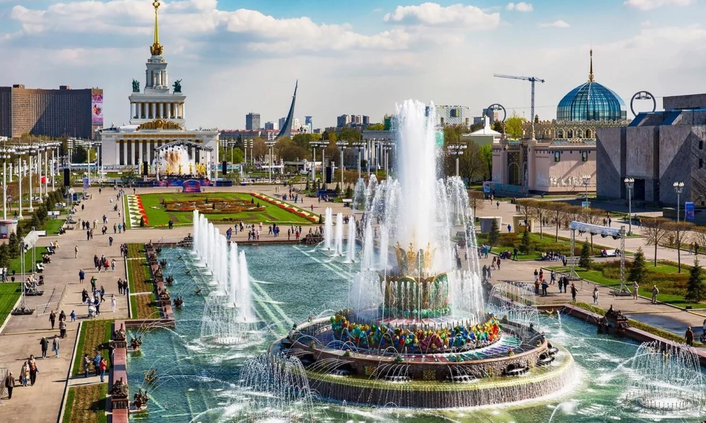
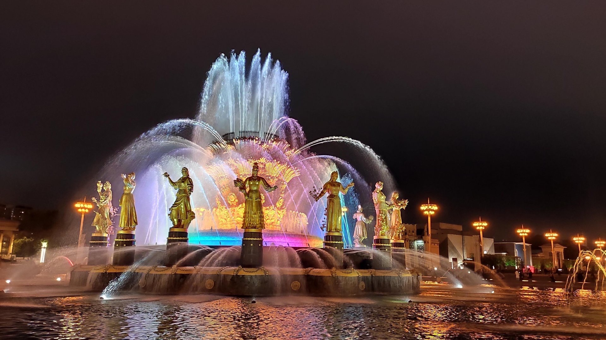

ВДНХ: Путешествие в советскую эпоху
Выставка достижений народного хозяйства (ВДНХ) — это огромный выставочный комплекс на севере Москвы, который был создан для демонстрации достижений СССР. Сегодня это популярное место для прогулок и развлечений.
ВДНХ была открыта в 1939 году и включает множество павильонов, фонтанов и парковых зон. Я посетил павильон "Космос", где находится музей космонавтики, и прокатился на колесе обозрения, с которого открывается потрясающий вид на город.
Здесь можно увидеть архитектуру советской эпохи, а также современные выставки и фестивали. ВДНХ — это место, где прошлое встречается с настоящим.
Совет: Планируйте визит заранее, чтобы посетить интересующие вас павильоны, и не пропустите фонтан "Дружба народов"!